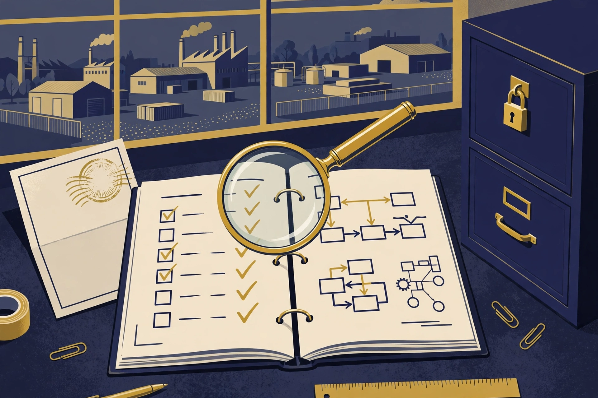

What a Readiness Assessment Can and Cannot Tell You

What is true, and what is not yet true
Here is what is true. A readiness assessment — a structured review of your posture against the requirements in scope, before the real assessment — is the most useful money a defense contractor can spend on CMMC preparation. It tells you which requirements are met, which are not, what evidence each gap needs, and what to fix first. It gives you the weighted score an assessor would produce, and it does so while there is still time to act. A good one is specific, evidenced, and uncomfortable. A bad one is a checklist with ticks and a reassuring summary, and it is worse than no assessment at all, because it spends your confidence as well as your money.
Here is what is not yet true, and the subject of this article. A readiness assessment is not a certification. It is not a guarantee of passing a C3PAO assessment. It is not a legal opinion, a security guarantee, or a promise that no incident will occur. It does not bind the Department, a prime contractor, or any future assessor. And the readiness advisor that produces it — including the CMMC agent described in this article — cannot grant, guarantee, or substitute for CMMC certification or a C3PAO assessment. As of November 6, 2026, the CMMC agent's instance is offline: no instance is deployed and no hire can be fulfilled today. Nothing in this article implies otherwise.
This article is about the boundary between preparation and proof. It explains what the different kinds of assessment are, how each one works, what each one can legitimately claim, and how to tell a serious readiness report from a decorative one. It is general education, not legal or assessment advice.
1. Four different things that all get called "an assessment"
The confusion starts with the word itself. In the CMMC world, "assessment" is used for at least four different things, and they do not carry the same weight.
The first is the self-assessment. At Level 1, this is the assessment: the organization assesses itself against the 15 requirements of FAR 52.204-21, annually, and submits the results and an annual affirmation to SPRS. At Level 2, a self-assessment is the assessment route for a defined subset of CUI contracts. A self-assessment is a formal act with a formal consequence — the SPRS submission and the senior official's affirmation — and it is not a rehearsal. The person who signs the affirmation is attesting to continuing compliance, and that attestation is a personal statement with real enforcement risk behind a false one. A self-assessment done carelessly is worse than no self-assessment, because it creates a record.
The second is the readiness assessment. This is a preparatory review, conducted before the formal assessment, by an advisor, a Registered Practitioner Organization, or an agent such as the CMMC agent. It mirrors the formal assessment's method — examining the same requirements, the same evidence, the same assessment objectives — but it carries no formal standing. Its deliverable is a report: posture, gaps, evidence needed, remediation steps, and usually a projected score. Nobody submits a readiness assessment to SPRS. Nobody's certification depends on it. Its value is entirely in what you do with it.
The third is the C3PAO certification assessment. At Level 2, for most CUI contracts, this is the formal assessment: an accredited Certified Third-Party Assessor Organization, accredited by the Cyber AB, assesses the organization against all 110 requirements of NIST SP 800-171 Revision 2, and the results go to the CMMC eMASS system, with the annual affirmation going to SPRS. The assessment is valid for three years. This is the assessment that produces a certification status — Final, Conditional, or not certified — and it is the only route to that status at Level 2, other than the self-assessment route where the contract permits it.
The fourth is the DIBCAC assessment. At Level 3, the assessment is conducted by the Defense Industrial Base Cybersecurity Assessment Center, the Department's own assessment organization, against all 110 Level 2 requirements plus 24 selected requirements from NIST SP 800-172. A contractor must already hold Final Level 2 status, via a C3PAO certification assessment, for the same assessment scope before a Level 3 assessment can begin. DIBCAC also conducts assessments in other contexts, including the Department's own assessment program that predates CMMC. A DIBCAC assessment is a government assessment, not a commercial one, and it is not something a contractor commissions casually.
Keeping these four apart is the first test of any readiness conversation. If a vendor uses "assessment" without saying which kind, ask. If a vendor offers to "certify" you and is not a C3PAO, stop. If a vendor's readiness report reads like a certificate, it is misrepresenting what it is.
2. How a real assessment works: interview, examine, test
Every formal assessment in this program — self, C3PAO, or DIBCAC — works the same way at the level of method. The assessor determines whether each requirement in scope is met by using three methods: interviews, examination of artifacts, and testing. The assessment objectives in NIST SP 800-171A, roughly 320 of them across the 110 requirements, define what must be shown for each requirement, and every objective must be satisfied for the requirement to be met.
Interviews mean the assessor talks to people: the system administrator who enforces multifactor authentication, the person who reviews the audit logs, the employee who handles CUI on the shop floor. The assessor is not testing their memory of the policy. The assessor is testing whether the person does what the policy says, knows their role in the incident response plan, and can describe the procedure they actually follow. A company whose staff cannot describe their own procedures has a finding, whatever the documents say.
Examination means the assessor reads artifacts: the System Security Plan, the policies, the configuration baselines, the training rosters, the log review records, the incident response plan and the record of its test, the media sanitization records, the POA&M. The assessor checks that the documents describe the systems that actually exist, that they are current, and that they are consistent with each other. An SSP that describes last year's network is an examination finding. A policy that contradicts the configuration is an examination finding.
Testing means the assessor verifies that the control works: attempting to log in without multifactor authentication, checking that a session locks after inactivity, confirming that an unpatched system cannot reach the CUI segment, verifying that the backup restores. Testing is where the gap between a documented control and a working control becomes visible, and it is the reason a readiness assessment that only reads documents has not done the job. A readiness report that contains no testing — no login attempt, no configuration check, no sample of logs — is a document review, and it should be labeled as one.
A readiness assessment should mirror this method, at a smaller scale and without formal standing. It should interview a sample of staff, examine a sample of artifacts, and test a sample of controls. It should record the method for each finding: what was examined, who was interviewed, what was tested, and what was observed. A finding without a method is an opinion, and an opinion is not evidence.
3. What a readiness assessment can tell you
A good readiness assessment can tell you five things, and they are worth paying for.
First, your posture against the requirements in scope, requirement by requirement. Not a percentage, not a color, but a determination for each of the 110 requirements at Level 2 — or each of the 15 at Level 1 — of met or not met, with the evidence cited. The 14 families and their counts are the checklist: Access Control (22), Awareness and Training (3), Audit and Accountability (9), Configuration Management (9), Identification and Authentication (11), Incident Response (3), Maintenance (6), Media Protection (9), Personnel Security (2), Physical Protection (6), Risk Assessment (3), Security Assessment (4), System and Communications Protection (16), and System and Information Integrity (7). Any report that cannot account for all 110 has not finished counting.
Second, your projected score. At Level 2, the Department's methodology starts at 110 and subtracts weighted points — 1, 3, or 5 — for each unmet requirement. A readiness assessment should produce that number, with the arithmetic shown, so you can see which gaps cost the most. A contractor seeking Conditional Level 2 status needs a score of at least 88 out of 110, with only eligible deficiencies remaining on the POA&M — and POA&M items generally cannot include requirements carrying 3- or 5-point values, subject to a narrow exception. The projected score is the number that tells you whether you are close or far, and the weights tell you what to fix first. A report that gives you a count of gaps without a weighted score has withheld the most decision-relevant number in the program.
Third, the evidence each gap needs. A gap is not useful information until you know what would close it. "Audit logging is not reviewed" is a finding. "Audit logging is not reviewed; the evidence needed is a named reviewer, a review schedule, and three months of review records showing findings and follow-up" is a remediation plan. The best readiness reports name the artifact for each gap, because the artifact is the unit of work. The companion article on the road to readiness works through the evidence discipline in detail; the point here is that a readiness assessment that lists gaps without evidence is a list of worries, not a plan.
Fourth, the order of work. Because the weights differ, the order is not the order of the checklist. The 5-point items come first — multifactor authentication, FIPS-validated cryptography for CUI, basic access control — because they cannot be deferred onto a POA&M and because they protect you most. Then the 3-point items, then the 1-point items. A readiness report that presents gaps in family order, without prioritization, has not done the analysis you paid for.
Fifth, the state of your scope and your documents. A readiness assessment should test the boundary: is CUI confined to the systems you say it is, or has it spread? It should read the System Security Plan and say whether it describes the systems that actually exist. It should check the POA&M for owners and dates. These are the findings that save the most money, because a boundary problem or a stale SSP multiplies every other finding. A readiness assessment that accepts the scope as given, without testing it, has skipped the highest-leverage question in the project.
4. What a readiness assessment cannot tell you
The limits are the point of this article, so they are stated as directly as the capabilities were.
It cannot tell you that you will pass. A readiness assessment is a sample, taken at a point in time, by someone who is not your assessor. The formal assessment will examine different artifacts, interview different people, test different controls, and apply its own judgment to the same objectives. A contractor can pass a readiness review and fail the formal assessment, because the formal assessment looked where the readiness review did not, or because the posture decayed between the two, or because the readiness review was wrong. Any readiness report that predicts a pass is overclaiming. The honest statement is narrower: this is your posture as observed, on these dates, against these requirements, by this method. Nothing more.
It cannot certify you. Certification at Level 2 comes from a C3PAO certification assessment, or from a self-assessment where the contract permits that route. Certification at Level 3 comes from DIBCAC. Certification at Level 1 comes from a self-assessment with an affirmation. A readiness advisor — a person, a firm, or an agent — is none of those. A readiness report that uses the language of certification, a seal, a badge, or a certificate is misrepresenting its standing, and a contractor that shows such a document to a prime or to the government as evidence of certification is creating a record that will not survive scrutiny.
It cannot guarantee your security. Meeting the 110 requirements of NIST SP 800-171 Revision 2 is a baseline for protecting CUI, not a guarantee against compromise. The requirements are controls against known risks; they do not cover every risk, and they do not make an organization immune to a determined adversary. The program's own history makes this plain: the requirements existed under DFARS 252.204-7012 for years before CMMC added verification, and incidents still occurred. A readiness assessment measures compliance with a defined set of requirements. It does not measure whether you will be breached. Anyone who sells you a readiness report as a security guarantee is selling something the report cannot deliver.
It cannot substitute for your own judgment. The affirmation is signed by a senior official in your organization, and that signature attests to continuing compliance. No advisor, no agent, and no report can sign it for you, and no report relieves you of the duty to understand what you are affirming. If the readiness report says a requirement is met and you have reason to doubt it — because you know the control broke last month, or the evidence is a screenshot from before a system change — your doubt governs, not the report. The signature is yours. The report is advice.
It cannot freeze time. A readiness assessment is a snapshot. Posture decays: accounts are created, configurations drift, training lapses, systems are replaced, people leave. A report that is six months old describes a company that no longer exists in detail, and a contractor that treats it as current is relying on a photograph of a moving object. That is why the program requires annual affirmations and three-year assessment cycles, and why the operating rhythm — monthly log and access reviews, quarterly POA&M reviews, annual risk assessment — matters more than any single report.
It cannot tell you what your contract requires. Your required level, your assessment type, and your deadlines are in your solicitation and your contract, not in a readiness report. A readiness assessment can tell you your posture against a level you name. It cannot tell you which level you owe. That determination belongs to the contract, the prime's flow-down, and qualified counsel — and a readiness advisor that purports to determine your level from a phone call is overreaching.
5. How to tell a serious readiness report from a decorative one
You do not need to be an assessor to judge a readiness report. You need to check for six things, and the absence of any one of them is a reason to ask questions.
Coverage. Does the report address every requirement in scope — all 110 at Level 2, all 15 at Level 1 — with a determination for each? A report that covers a sample of families, or that summarizes whole families in a paragraph, has not assessed your posture. It has surveyed it.
Method. Does the report say, for each finding, what was interviewed, examined, or tested? A finding that cites the artifact examined and the test performed can be checked. A finding that states a conclusion without a method cannot be, and it should not be relied on.
Evidence. Does the report name the evidence for each met requirement, and the evidence needed for each gap? "Met" without a cited artifact is an assertion. "Not met" without a named artifact is a worry. Both should be specific enough that a second person could verify them.
Score. At Level 2, does the report give the weighted SPRS score, with the arithmetic shown? A report that gives a percentage of requirements met, or a color rating, without the weighted score, has withheld the number the program actually uses.
Scope. Does the report test the boundary — where CUI lives, whether it has spread, whether the SSP describes the real systems? A report that accepts the scope as given has skipped the question that determines the size of the assessment.
Independence. Who produced the report, and what is their relationship to the people who will assess you? A readiness review conducted by the same firm that sells you the remediation tools has a conflict that should be disclosed and managed. A review conducted by a Registered Practitioner Organization is advice, not assessment, and should be labeled as such. And a review produced by an agent — including the CMMC agent — should be labeled as an agent-produced readiness report, not as a human assessor's opinion. The label matters, because the weight a prime or an assessor gives the document depends on who produced it and how.
There is a seventh check, and it is the simplest: does the report make you uncomfortable? A serious readiness assessment finds things. A contractor that receives a clean report on its first readiness review should be suspicious, not relieved — either the scope was drawn too narrowly, the method was too shallow, or the reviewer was too kind. The value of the exercise is in the findings, not in the comfort.
6. The readiness report and the formal assessment: what carries over, and what does not
A good readiness assessment does carry over into the formal assessment, in three concrete ways. First, the evidence folder it helps you build — the configurations, the logs, the rosters, the SSP — is the same evidence the formal assessor will examine, and building it early means it is current rather than assembled in a rush. Second, the POA&M it produces, with owners and dates, is the working document that shows the formal assessor that gaps are managed rather than ignored; at Level 2, a POA&M that covers only eligible deficiencies is a precondition of conditional status, and a readiness review is the right place to test whether your POA&M meets the eligibility rules. Third, the rehearsal effect: staff who have been interviewed and whose controls have been tested once will be calmer and more accurate the second time, and the organization will have learned how an assessment actually proceeds.
What does not carry over is the determination itself. The formal assessor makes fresh determinations, on fresh evidence, at a later date. A requirement that was met in the readiness review may be not met in the formal assessment, because the control changed, the evidence aged, or the formal assessor applied a different reading of an objective. That is not a failure of the readiness review. It is the nature of the process. The readiness review's job is to make the formal assessment unsurprising, not to predict it.
There is one more thing that does not carry over, and it is the most consequential: the signature. The annual affirmation is signed by a senior official in your organization, on the basis of the formal assessment result and the organization's continuing compliance. No readiness report, however thorough, stands behind that signature. The person who signs should have read the formal assessment result, seen the evidence, and understood the POA&M. If the readiness report is the only document the signer has read, the signer has not done the job the program asks of them.
7. What the CMMC agent's readiness jobs are — and what they are not
The CMMC Compliance Advisor is one of five agents operated by the AGI Future Foundation on Virtuals Protocol, and its catalog is designed around exactly the preparatory work this article describes. As recorded on November 6, 2026, the catalog is six jobs and one subscription, all with Require Funds on. The readiness jobs, in the order a contractor would use them, are: control_lookup at $2 per 30 minutes — a lookup of one control, what it requires, and the evidence needed, useful when you are working through the baseline requirement by requirement; compliance_data_access at $10 per 24 hours — structured CMMC reference data, control lists and requirement mappings delivered as JSON or CSV; readiness_check at $25 per 24 hours — a readiness check for the level you name, covering controls in scope, current posture, and gaps; policy_template at $15 per 24 hours — a policy template for the area you name; compliance_gap_report at $50 per 48 hours — a detailed gap report with each missing control, the evidence needed, and remediation steps; and full_readiness_assessment at $150 per 72 hours — a full readiness assessment of all controls in scope, with posture, gaps, and remediation steps. The subscription is compliance_watch at $20 per 30 days: ongoing watch on CMMC requirement changes and what they mean for your posture. Those are the only prices that apply to this agent.

The agent's standing as of the same date: Pro status, no token, Health 2 out of 5, Compute $9.75 in credits, 0 jobs completed, $0 earned. The governing fact: as of November 6, 2026, the CMMC agent's instance is offline. No instance is deployed, and no hire can be fulfilled today. Hosting must be settled and an instance deployed before a hired job can be delivered. Do not plan a readiness review around hiring the agent until that status changes.
Within those limits, the catalog maps sensibly onto the work. The $2 lookup is the cheapest way to answer a single question while you baseline. The $25 check is a first pass at posture. The $50 gap report is the input to the POA&M. The $150 full assessment is the rehearsal before the formal assessment. The $20 monthly watch is the mechanism for keeping the program current — requirement changes, the resumption of Phase 2, the eventual adoption of NIST SP 800-171 Revision 3 — without re-reading the program from scratch each quarter. What none of these jobs is: a certification, a guarantee of passing, a signature on your affirmation, or a substitute for a C3PAO assessment. The agent is a readiness advisor. The readiness report it produces, when it is online, is a readiness report: useful, specific, and without formal standing. Treat it as such and it will serve you well. Treat it as a certificate and it will mislead you.
The family context is one paragraph. The CMMC agent is one of five Foundation agents, and together the five offer 29 jobs and 6 subscriptions: Omega with 5 jobs and 1 subscription, Tactile with 6 jobs and 2 subscriptions, ALS with 6 jobs and 1 subscription, CMMC with 6 jobs and 1 subscription, and WAVE with 6 jobs and 1 subscription. That catalog is the Foundation's agent-monetization program: small, fixed-price, clearly scoped jobs sold through Virtuals Protocol's ACP. Whether any of it earns revenue depends on instances being online to fulfil hires — which is, today, the CMMC agent's open problem.

8. Frequently asked questions
If a readiness assessment says we are ready, will we pass the C3PAO assessment? No one can promise that. A readiness assessment is a sample at a point in time by someone who is not your assessor. It can tell you your posture as observed; it cannot predict the formal assessment's determinations.
Can we show our readiness report to a prime as proof of compliance? You can show it as evidence of preparation. You cannot show it as certification. A prime that asks for your SPRS score and your CMMC status is asking for the formal record, and a readiness report is not that record.
Should the same firm do our readiness review and our remediation? It can, but the conflict should be disclosed: a firm that profits from finding gaps has an interest in finding them. An independent readiness review, or a review whose scope and method are documented, manages that risk.
How often should we do a readiness assessment? Before the formal assessment, certainly. After any significant change to the systems in scope — a new cloud service, a network redesign, a major staff change — the posture should be re-checked. And annually, as part of the affirmation cycle, a light re-baseline keeps the program honest.
Does the July 2026 Phase 2 suspension mean we can skip the readiness review? No. Phase 1 self-assessment requirements remain in effect, DFARS 252.204-7012 remains in force, and primes continue to ask for evidence. The suspension moved the third-party gate, not the work.
Glossary
- C3PAO — CMMC Third-Party Assessor Organization, accredited by the Cyber AB to conduct Level 2 certification assessments.
- DIBCAC — Defense Industrial Base Cybersecurity Assessment Center, the Department organization that conducts Level 3 assessments.
- NIST SP 800-171A — the NIST publication defining assessment procedures and objectives for the 110 requirements of SP 800-171 Rev. 2.
- POA&M — Plan of Action and Milestones: a documented plan for remediating unmet requirements, with owners and due dates.
- SPRS — Supplier Performance Risk System, where assessment results and affirmations are posted.
- SSP — System Security Plan: the document describing the system boundary, environment, and how each requirement is implemented.
References
- InterSec, "CMMC 2.0 Requirements: The 3 Levels for Contractors," https://www.intersecinc.com/guides/federal-contractors-guide-to-cmmc-2-0 — levels, phase-in timeline, the July 13, 2026 Phase 2 suspension, conditional Level 2 scoring.
- Bright Defense, "CMMC 2.0 Final Rule: Key Updates for Defense Contractors," updated September 28, 2026, https://www.brightdefense.com/resources/cmmc-2-0-final-rule/ — the three levels, conditional status, and the projected distribution of entities across levels.
- Schellman, "What is NIST SP 800-171?," updated February 6, 2026, https://www.schellman.com/blog/federal-compliance/what-is-nist-sp-800-171 — the 110 requirements in 14 families.
- ScalePad, "The MSP's Tactical Guide to CMMC Compliance," https://www.scalepad.com/resources/cmmc-msp-field-guide — the 110 controls, the 320 assessment objectives in SP 800-171A, and the SPRS scoring range.
- Industrial Cyber, "CMMC Phase II halt puts C3PAO assessments on hold but leaves NIST SP 800-171 obligations in force for contractors," August 25, 2026, https://industrialcyber.co/features/cmmc-phase-ii-halt-puts-c3pao-assessments-on-hold-but-leaves-nist-sp-800-171-obligations-in-force-for-contractors/ — the suspension and the continuation of DFARS 252.204-7012 obligations.
- Peak InfoSec, response to the Department's "Reforming CMMC and Reducing Compliance Burden" request for information, August 2026, http://peakinfosec.com/wp-content/uploads/2026/06/CMMC-RFI-2026-Peak-InfoSec-v1.1.pdf — a small-business C3PAO's account of client readiness and assessment costs.
- CMMC Compliance Advisor, Virtuals Protocol ACP page, https://app.virtuals.io/acp/agents/019ebb4d-70a7-7e23-9c28-41175e14c566 — job catalog and prices as recorded November 6, 2026.
- CMMC agent site, https://cmmc.agifuturefoundation.org/ and jobs page https://cmmc.agifuturefoundation.org/jobs.html — catalog, status, and offline notice as of November 6, 2026.
- AGI Future Foundation, https://www.agifuturefoundation.org/ — the Foundation that operates the CMMC agent.
This article is general education about a public program. It is not legal or assessment advice, or a promise about any agent's availability. Confirm your required CMMC level against your solicitation, your contract, and current Department of Defense publications, and check the agent's live ACP page before attempting a hire.